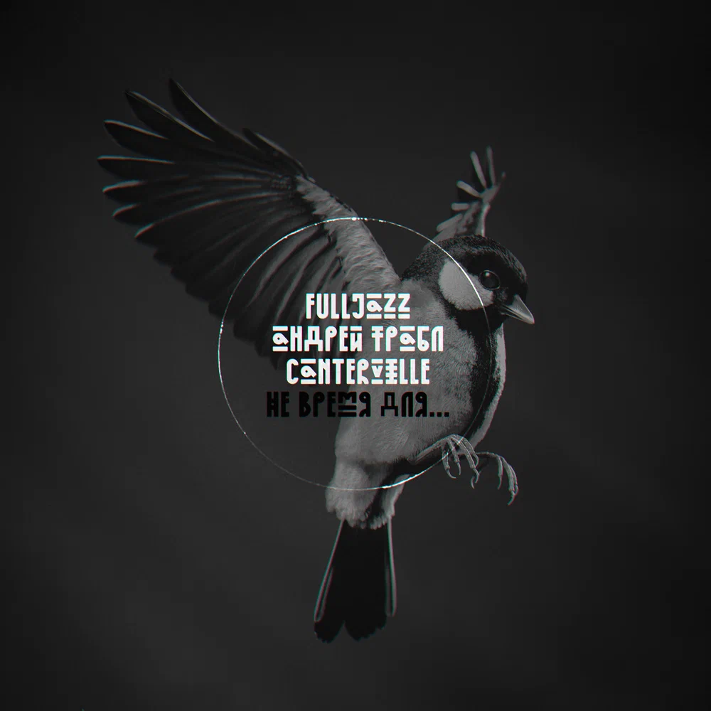

Андрей Трабл, FullJazz, Canterville
Не время для...
Запись: Андрей Трабл, Canterville
Текст: Андрей Трабл, FullJazz, Canterville
Музыка, сведение, мастеринг, обложка: Андрей Трабл
Захотел узнать наверняка тут, чем дорожу так: в бэкграунд – пара шуток и в телеке промежуток. Людям выношу на блюде хайлайты из мира хтони, Десять лет пишу куплеты свежие, ну как тектоник. Нет времени для успеха. Да-да-да. Я давным-давно понял: лучше сделать хорошо, но никогда, чем кое-как, но сегодня. Каждый день – абсурд, смешнее Димы Гордона. Люди строят крепости, но из песка и картона. В этой временной петле кручусь, как Энди Сэмберг, лишь бы не зависнуть, как герой Уэлша, – дома. Мы играем в морской бой – на себе ставлю крестик. Среди достижений ноль – пульну про это постик. Пусть вывозит, как всегда, череда бездействий. Эскапизм и неуверенность – мои вип-гости. Боже, какая ты великая скромница. В руках синица – ей пою, когда хочется. Нам под одним костром орать и знакомиться. Я б приходил – да вот мечтать не приходится. Боже, какая ты великая скромница. В руках синица – ей пою, когда хочется. И, закрываясь от лучей, пью до донышка, ведь мне важнее, что растёт моё солнышко. Сколько всего ещё натерпится тетрадица? Записки в ней взяли привычку теплиться, но тратиться по мелочи: от девочек до белочек; и песенки эти лишь ради галочек, но тебе это нравится. Ведь всё это давно уже фиксирует гримория, в той категории людей, не знающих, где море. Я вторю "dignum memoriā", боясь остаться незамеченным, и промолчать бы легче, быть немым – тем более. Знаешь, я неба был давно как-то лишён от траура. Башка забита всякой дрянью, как у Джона Брауна: отсюда вертолёты после стаканов на пене, а карманы, как и фобии мои, в поисках Пенни. Мы не спели, но не спали много лет и прозевали, как медленно уходили люди на феназепаме. Время одиночек пройдено, расскажи лучше, как тебе, с кем-то ещё? Мне лично комфортно было и в дактиле. Боже, какая ты великая скромница. В руках синица – ей пою, когда хочется. Нам под одним костром орать и знакомиться. Я б приходил – да вот мечтать не приходится. Боже, какая ты великая скромница. В руках синица – ей пою, когда хочется. И, закрываясь от лучей, пью до донышка, ведь мне важнее, что растёт моё солнышко.